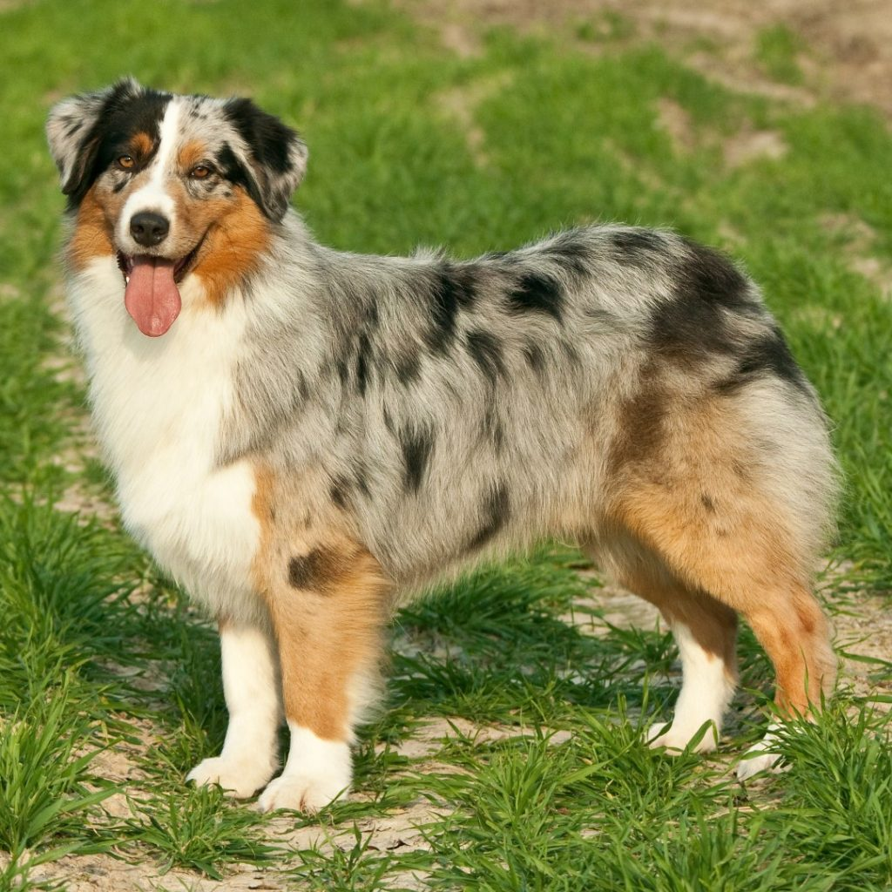
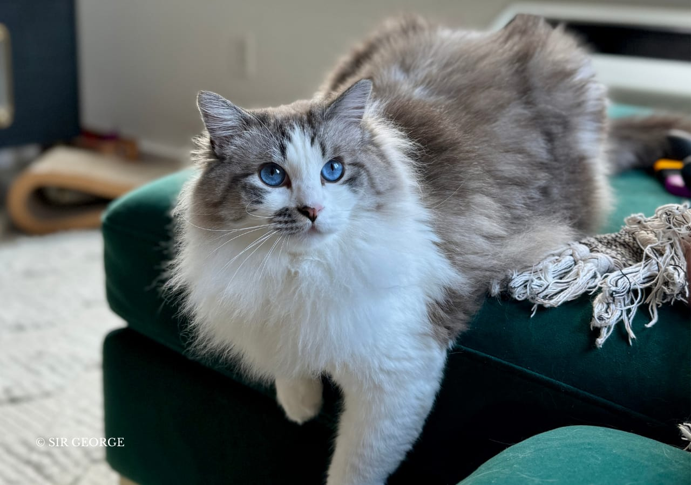
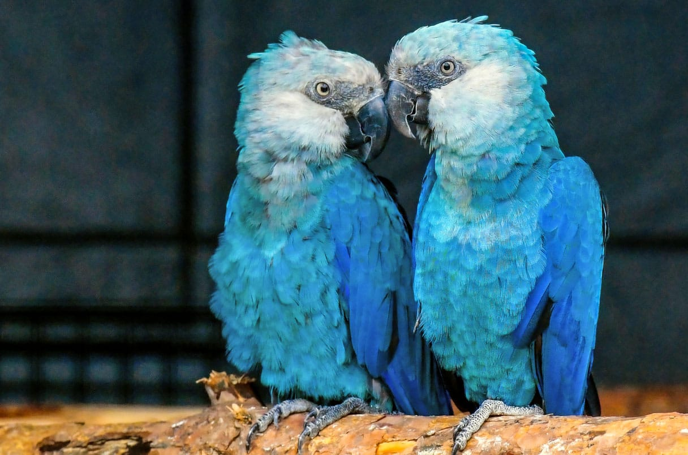

The Australian Shepherd, despite its name, originated in the USA. This intelligent and energetic herding breed thrives on activity and training. Known for their loyalty and striking coat colors like merle, Aussies make devoted family pets but require significant exercise and mental stimulation. Their herding instincts might surface, so early socialization is key. Regular grooming is needed for their double coat.

The Ragdoll is a large, affectionate cat known for its striking blue eyes and soft, semi-long coat. Originating in the USA in the 1960s, they are named for their tendency to go limp when held. Ragdolls are gentle, docile, and enjoy human companionship, often following their owners around. They are relatively quiet and get along well with children and other pets, making them ideal family cats. Regular grooming is needed to maintain their plush coat.

The Spix's Macaw (Cyanopsitta spixii) is a small, strikingly blue parrot from northeastern Brazil. Sadly, it is now extinct in the wild, with the last sighting in 2000, due to habitat loss and the pet trade. However, captive breeding programs offer hope, with reintroduction efforts underway in their native Caatinga habitat. These macaws rely on Caraiba trees for nesting and feed on seeds, nuts, and fruits. Conservation remains crucial for this iconic species.
Taking part in The Girls Code - Breaking Barriers was fantastic! I had some tough spots, but the help from leaders and friends in the course let me keep going. I learned that you can do anything, and things that looked like magic before now feel easy! It was a great time to learn and get better at things. Thanks a lot!💗💗